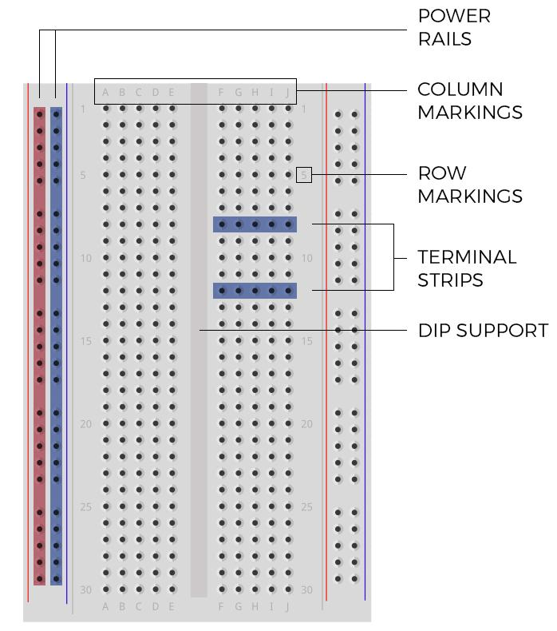
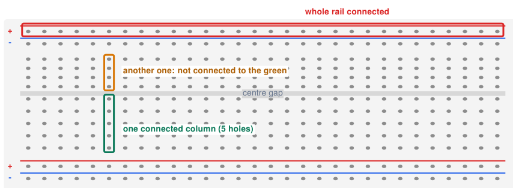
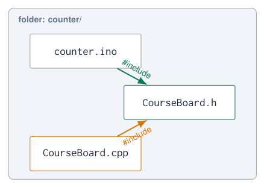

Breadboard and Libraries¶
The breadboard¶

-
Build and test circuits before soldering; debug designs quickly.
-
Side rails (power rails): long strips for VCC (red, +) and GND (blue, \(-\)).
-
Terminal strips: each row of 5 holes is connected.
-
The centre gap separates the two halves: no connection across it. Chips (DIP) straddle it.
-
Use colour-coded jumper wires: red = 3.3 V/5 V, black = GND, other colours = signals.
Long breadboards
On some boards the power rails are split in the middle: bridge them with a wire.
Sources: Figure: lecture 4 Embedded Programming, lectures 1–6
How the strips are connected¶

Rule
Two legs in the same strip are connected. Two legs in different strips only connect through a wire or component.
ESP32 DevKit on a breadboard
The DevKit is wide: it covers almost both halves. Use two breadboards side by side, or only one row of free holes.
Common breadboard mistakes¶
-
Both legs of a resistor or LED in the same strip: the component is shorted.
-
Component placed along the gap instead of across it.
-
Power rail split in the middle, half the board has no power.
-
5 V on a rail that also feeds 3.3 V parts.
-
LED inserted the wrong way round (long leg = anode = +).
-
Loose wires: push them in fully, keep them short and flat.
Build step by step
-
Connect GND and 3.3 V rails, measure them.
-
Add one component, test with a small sketch.
-
Add the next one only when the first works.
Document
Take a photo of the working setup and draw the wiring (e.g. Fritzing, draw.io, Wokwi): you need it for the report.
Libraries: standing on the shoulders of others¶
-
A library is ready-made code for a task or a device: you call its functions instead of writing everything yourself.
-
Built into the ESP32 core:
Wire(I2C),SPI,WiFi,Preferences,Ticker,WebServer… -
External, via the Library Manager: sensor and display drivers (DHT, BME280, SSD1306, PubSubClient …).
Workflow for every new library
-
Install: Sketch \(\rightarrow\) Include Library \(\rightarrow\) Manage Libraries, search, install (also its dependencies).
-
Read the example sketch: File \(\rightarrow\) Examples \(\rightarrow\) \<library>.
-
Add
#include <LibraryName.h>. -
Create the required object.
-
Call its initialisation in
setup(). -
Use its functions in
loop()or your own functions.
Sources: Embedded Programming, lectures 1–6; Arduino ESP32 Core Documentation
Example: DHT22 temperature and humidity¶
#include <DHT.h>
DHT dht(25, DHT22); // data pin, sensor type
void setup() {
Serial.begin(115200);
dht.begin();
}
void loop() {
float t = dht.readTemperature(); // Celsius
float h = dht.readHumidity(); // %
if (isnan(t) || isnan(h)) {
Serial.println("DHT read failed");
} else {
Serial.printf("T = %.1f C RH = %.0f %%\n", t, h);
}
delay(2000); // DHT22: max one read per 2 s
}
-
Library: DHT sensor library by Adafruit (+ Adafruit Unified Sensor).
-
The object
dhtknows the pin and the sensor type. -
isnan(): the library returns “not a number” when the read fails: always check!
Error you will see
fatal error: DHT.h: No such file or directory \(\Rightarrow\) the library is not installed.
Sources: DHT sensor library; Embedded Programming, lectures 1–6
Example: SSD1306 OLED display¶
#include <Wire.h>
#include <Adafruit_GFX.h>
#include <Adafruit_SSD1306.h>
Adafruit_SSD1306 display(128, 64, &Wire, -1); // w, h, bus, no reset pin
void setup() {
Serial.begin(115200);
Wire.begin(19, 18); // course board I2C
if (!display.begin(SSD1306_SWITCHCAPVCC, 0x3C)) {
Serial.println("OLED not found");
while (true) delay(10);
}
display.clearDisplay();
display.setTextSize(2);
display.setTextColor(SSD1306_WHITE);
display.setCursor(0, 0);
display.print("Hello");
display.display(); // nothing shows before this call!
}
void loop() {}
-
Libraries: Adafruit SSD1306 + Adafruit GFX.
-
0x3C: the I2C address of the display. -
Drawing happens in a buffer in RAM;
display()sends it to the screen. -
&Wire: the address of the I2C object the display uses.
Sources: Adafruit SSD1306 Library; Embedded Programming, lectures 1–6
Under the hood: what a library does for you¶
-
display.begin()sends a list of command bytes over I2C, for exampleWire.write(0xAE): “display off”, then contrast, addressing mode, … “display on”. -
Those numbers come from the datasheet of the SSD1306 controller.
-
The library author read the datasheet so you do not have to, but you can, and sometimes must.
Yes, hex
Registers, commands and addresses are written in hexadecimal: 0xAE, 0x3C, 0x76. That is why we practised it.
Choose libraries carefully
Popular, maintained, with examples and compatible with the ESP32 core 3.x. Check the date of the last update.
Sources: Embedded Programming, lectures 1–6
Your own library: why and what?¶
Why write a library?
-
Reuse the same code in every project, without copy-paste.
-
Hide details (pins, registers, timing) behind clear names.
-
Share with your project team, or publish it on GitHub.
-
Fix a bug once: every project that uses the library benefits.
From functions to libraries
A library is the next step after functions: you group related functions (or a class) in their own files.
What is inside?
#include 'x.h' vs <x.h>
Quotes: file in your sketch folder. Angle brackets: an installed library.
Sources: Writing a Library for Arduino; Library specification
Step 1: split a sketch into tabs¶

-
In the IDE: the … menu at the right of the tabs \(\rightarrow\) New Tab.
-
Name it
CourseBoard.h, then a second tabCourseBoard.cpp. -
The files are saved in the same folder as the sketch.
-
Move the functions from the
.inofile to the.cppfile; put their declarations in the.hfile.
Start here
A library in tabs is already useful: it keeps loop() short. Step 5 turns it into an installed library.
Sources: Writing a Library for Arduino
Step 2: the header and the implementation¶
// CourseBoard.h: what the library offers
#pragma once // include this file only once
#include <Arduino.h>
void boardBegin(); // LEDs + buttons
void setLed(int index, bool on); // index 0..3
void showBinary(uint8_t value); // 4 bits on the LEDs
bool keyPressed(int key); // key 1 or 2
-
The header holds only declarations: the “menu” of the library.
-
#pragma onceprevents errors when the header is included twice. -
Comments in the header are the user’s documentation.
// CourseBoard.cpp: how it works
#include "CourseBoard.h"
// static: only visible inside this file (private)
static const int LEDS[4] = {23, 22, 21, 4};
static const int KEYS[2] = {34, 35};
void boardBegin() {
for (int i = 0; i < 4; i++) pinMode(LEDS[i], OUTPUT);
for (int i = 0; i < 2; i++) pinMode(KEYS[i], INPUT);
}
void setLed(int index, bool on) {
if (index >= 0 && index < 4) digitalWrite(LEDS[index], on);
}
void showBinary(uint8_t value) {
for (int i = 0; i < 4; i++) setLed(i, (value >> i) & 1);
}
bool keyPressed(int key) {
return digitalRead(KEYS[key - 1]) == HIGH; // active HIGH
}
Sources: Writing a Library for Arduino
Step 3: use your library¶
#include "CourseBoard.h" // our own tab
uint8_t counter = 0;
bool lastKey = false;
void setup() {
boardBegin();
}
void loop() {
bool key = keyPressed(1);
if (key && !lastKey) { // new press
counter++;
showBinary(counter); // 0..15 on the LEDs
}
lastKey = key;
delay(20);
}
-
The sketch no longer knows which pins are used, or that the buttons are active HIGH.
-
A board with other pins? Only
CourseBoard.cppchanges; every sketch keeps working. -
The names (
boardBegin,showBinary) makeloop()readable.
Typical errors
undefined reference to ‘showBinary’: declared in the .h but not defined in the .cpp (or a typo). CourseBoard.h: No such file: the tab is missing or misspelled.
Step 4: a library with a class¶
#pragma once
#include <Arduino.h>
class Blinker {
public: // what users may call
Blinker(int pin, unsigned long ms); // constructor
void begin();
void update(); // call often in loop()
private: // internal state
int _pin;
unsigned long _interval;
unsigned long _last = 0;
bool _on = false;
};
-
A class bundles data (pin, interval, state) and functions.
-
Each object has its own data: two LEDs, two speeds, one code.
-
Exactly how
DHT dht(25, DHT22); dht.begin();works.
#include "Blinker.h"
Blinker::Blinker(int pin, unsigned long ms)
: _pin(pin), _interval(ms) {}
void Blinker::begin() { pinMode(_pin, OUTPUT); }
void Blinker::update() { // non-blocking
if (millis() - _last >= _interval) {
_last = millis();
_on = !_on;
digitalWrite(_pin, _on);
}
}
#include "Blinker.h"
Blinker blue(23, 250), red(21, 1000); // two objects
void setup() { blue.begin(); red.begin(); }
void loop() { blue.update(); red.update(); }
Sources: Writing a Library for Arduino
Step 5: install it as a real library¶
CourseBoard/
library.properties
README.md
keywords.txt (optional: colours in the IDE)
src/
CourseBoard.h
CourseBoard.cpp
Blinker.h
Blinker.cpp
examples/
Counter/
Counter.ino
BlinkTwo/
BlinkTwo.ino
Restart the IDE: the library appears in Sketch \(\rightarrow\) Include Library and its examples in File \(\rightarrow\) Examples.
name=CourseBoard
version=1.0.0
author=Your Name
maintainer=Your Name <you@example.com>
sentence=Helpers for the Embedded Programming course board.
paragraph=LEDs, buttons and a non-blocking Blinker class.
category=Device Control
url=https://github.com/you/CourseBoard
architectures=esp32
-
In sketches now:
#include <CourseBoard.h>(angle brackets). -
Share it as a ZIP: Sketch \(\rightarrow\) Include Library \(\rightarrow\) Add .ZIP Library.
-
Increase
versionat every change; keep it in Git.
Sources: Library specification Library specification
Good practices for your own library¶
-
Unique names: a prefix or a class avoids clashes with other libraries (
boardBegin, notbegin). -
Configurable: pins via the constructor or
begin(pin), not hard-coded where possible. -
Non-blocking: no long
delay()inside; offer anupdate()forloop(). -
Private by default:
statichelpers andprivate:members.
-
Document every function in the header (what, units, ranges).
-
Ship at least one example sketch per feature.
-
Test each function on its own before using the library in a project.
-
Version it and keep it in Git.
Include guards
#pragma once is short and supported everywhere in Arduino. The classic form is #ifndef COURSEBOARD_H / #define COURSEBOARD_H … #endif.
Sources: Writing a Library for Arduino; Library specification
Quiz: your own library¶
-
What goes in the
.hfile and what in the.cppfile?Check your answer
.h: declarations (what is available)..cpp: definitions (the code). -
When do you write
#include "CourseBoard.h"and when#include <CourseBoard.h>?Check your answer
Quotes: a tab in the sketch folder. Angle brackets: an installed library.
-
The compiler says
undefined reference to ‘setLed’. What is missing?Check your answer
The definition of
setLed()in the.cppfile (or the.cppis not in the sketch/library folder). -
Why use a class for
Blinkerinstead of global variables?Check your answer
Each object keeps its own pin, interval and state: many blinkers with one piece of code.
Exercises: breadboard and libraries¶
Exercise 1 – First breadboard circuit
Build an LED with resistor and a button (with INPUT_PULLUP) on the breadboard on GPIO 25 and 26. Reproduce the toggle example.
Exercise 2 – Install and explore
Install the DHT library, run its example, then rewrite it in your own style: constants, a function bool readClimate(float &t, float &h).
Exercise 3 – Display your data
Show the temperature and the potentiometer value on the OLED, updated every second without delay().
Exercise 4 – Your CourseBoard library
Build the CourseBoard library with Blinker and a debounced Button class (pressed() returns true once per press). Install it, add two examples, and put it on GitHub.